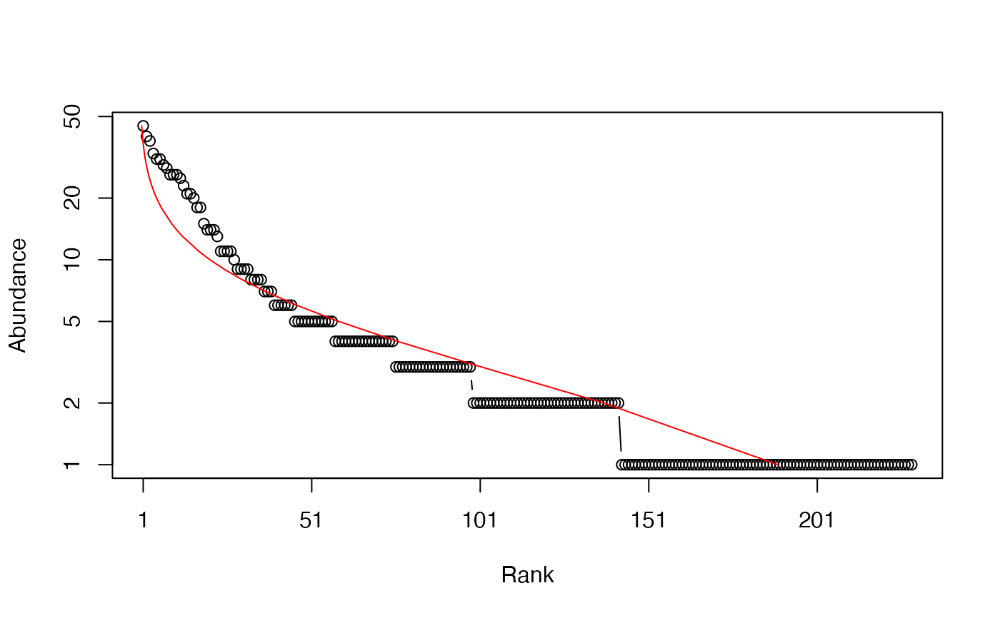
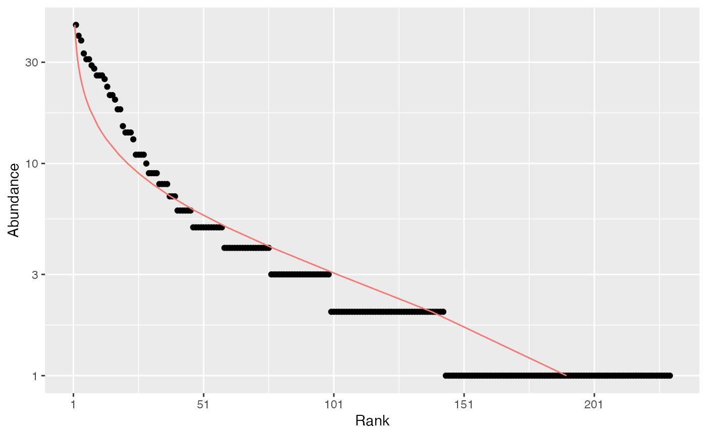

Species Distributions
SpeciesDistribution.RdA Species Distribution is a (preferably named) vector containing species abundances or probabilities.
Usage
as.SpeciesDistribution(x, ...)
# S3 method for class 'data.frame'
as.SpeciesDistribution(x, ...)
# S3 method for class 'integer'
as.SpeciesDistribution(x, ...)
# S3 method for class 'numeric'
as.SpeciesDistribution(x, ...)
# S3 method for class 'SpeciesDistribution'
autoplot(object, ..., Distribution = NULL,
ylog = TRUE, main = NULL, xlab = "Rank", ylab = NULL,
pch = ggplot2::GeomPoint$default_aes$shape,
col = ggplot2::GeomPoint$default_aes$colour,
cex = ggplot2::GeomPoint$default_aes$size)
# S3 method for class 'SpeciesDistribution'
plot(x, ..., Distribution = NULL,
type = "b", log = "y", main = NULL, xlab = "Rank", ylab = NULL)
is.SpeciesDistribution(x)
as.ProbaVector(x, ...)
# S3 method for class 'data.frame'
as.ProbaVector(x, ...)
# S3 method for class 'integer'
as.ProbaVector(x, Correction = "None", Unveiling = "None",
RCorrection = "Jackknife", JackOver = FALSE, JackMax = 10,
CEstimator = "ZhangHuang", q = 0, ..., CheckArguments = TRUE)
# S3 method for class 'numeric'
as.ProbaVector(x, Correction = "None", Unveiling = "None",
RCorrection = "Jackknife", JackOver = FALSE, JackMax = 10,
CEstimator = "ZhangHuang", q = 0, ..., CheckArguments = TRUE)
is.ProbaVector(x)
as.AbdVector(x, ...)
# S3 method for class 'data.frame'
as.AbdVector(x, Round = TRUE, ...)
# S3 method for class 'integer'
as.AbdVector(x, ...)
# S3 method for class 'numeric'
as.AbdVector(x, Round = TRUE, ...)
is.AbdVector(x)Arguments
- x
An object.
- object
An object.
- Distribution
The distribution to fit on the plot. May be
"lnorm"(log-normal),"lseries"(log-series),"geom"(geometric) or"bstick"(broken stick). IfNULL, no distribution is fitted. SeerCommunityfor the description of these distributions.- Round
If
TRUE(by default), values ofxare set to integer to create anAbdVector. This is useful if original abundances are not integers (this is often the case forMetaCommunityabundances which are the product of probabilities by the number of individuals) and integer values are required (for example to calculate the bootstrap confidence interval of a community profile).- Correction
A string containing one of the possible corrections to estimate a probability distribution:
"None"(no correction, the default value), or"Chao2013","Chao2015","ChaoShen"to estimate the probability of the observed species in the asymptotic distribution.- Unveiling
A string containing one of the possible unveiling methods to estimate the probabilities of the unobserved species:
"None"(default, no species is added),"unif"(uniform: all unobserved species have the same probability) or"geom"(geometric: the unobserved species distribution is geometric).- RCorrection
A string containing a correction recognized by
Richnessto evaluate the total number of species."Jackknife"is the default value. An alternative is"Rarefy"to estimate the number of species such that the entropy of orderqof the asymptotic distribution rarefied to the observed sample size equals the actual entropy of the data.- JackOver
If
TRUE, retain the jackknife order immediately superior to the optimal one, usually resulting in the overestimation of the number of species. Default isFALSE. Ignored ifRCorrectionis not"Jackknife".- JackMax
The highest jackknife order allowed. Default is 10. Allowed values are between 1 and 10.
- CEstimator
A string containing an estimator recognized by
Coverageto evaluate the sample coverage."ZhangHuang"is the default value.- q
A number: the order of entropy. Default is 0 for richness. Used only to estimate asymptotic probability distributions with
RCorrectionequal to"Rarefy". Then, the number of unobserved species is fitted so that the entropy of orderqof the asymptotic probability distribution at the observed sample size equals the actual entropy of the data.- type
The plot type, see
plot.- log
The axis to plot in log scale, e.g.
"xy"for both axes. Default is"y".- main
The main title of the plot. if
NULL(by default), there is no title.- xlab
The X axis label, "Rank" by default.
- ylab
The Y axis label. if
NULL(by default), "Probability" or "Abundance" is chosen according to the object class.- ylog
Logical; if
TRUE(by default), the Y-axis of the plot is log scaled.- pch
The plotting characters. See
points.- col
The color of the geom objects. See "Color Specification" in
par.- cex
The character expansion (size) of the points. See
points.- ...
Additional arguments to be passed to
plot. Unused elsewhere.- CheckArguments
Logical; if
TRUE, the function arguments are verified. Should be set toFALSEto save time when the arguments have been checked elsewhere.
Details
SpeciesDistribution objects include AbdVector and ProbaVector objects.
as.AbdVector just sets the class of the numeric or integer x so that appropriate versions of community functions (generic methods such as Diversity) are applied. Abundance values are rounded (by default) to the nearest integer.
as.ProbaVector normalizes the vector so that it sums to 1. If Correction is not "None", the observed abundance distribution is used to estimate the actual species distribution. The list of species will be changed: zero-abundance species will be cleared, and some unobserved species will be added. First, observed species probabilities are estimated folllowing Chao and Shen (2003), i.e. input probabilities are multiplied by the sample coverage, or according to more sophisticated models: Chao et al. (2013, single-parameter model), or Chao et al. (2015, two-parameter model). The total probability of observed species equals the sample coverage. Then, the distribution of unobserved species can be unveiled: their number is estimated according to RCorrection (if the Jackknife estimator is chosen, the JackOver argument allows using the order immediately over the optimal one). The coverage deficit (1 minus the sample coverage) is shared by the unobserved species equally (Unveiling = "unif", Chao et al., 2013) or according to a geometric distribution (Unveiling = "geom", Chao et al., 2015).
These functions can be applied to data frames to calculate the joint diversity (Gregorius, 2010).
SpeciesDistribution objects can be plotted. The plot method returns the estimated parameters of the fitted distribution. The broken stick has no parameter, so the maximum abundance is returned.
Note
Fisher's alpha (Fisher et al., 1943) is estimated to fit the log-series distribution. The estimation is done by the fisher.alpha function of package vegan. It may differ substantially from the estimation returned by optimal.theta from package untb.
References
Chao, A. and Shen, T. J. (2003). Nonparametric estimation of Shannon's index of diversity when there are unseen species in sample. Environmental and Ecological Statistics 10(4): 429-443.
Chao, A., Wang, Y. T. and Jost, L. (2013). Entropy and the species accumulation curve: a novel entropy estimator via discovery rates of new species. Methods in Ecology and Evolution 4(11):1091-1100.
Chao, A., Hsieh, T. C., Chazdon, R. L., Colwell, R. K., Gotelli, N. J. (2015) Unveiling the Species-Rank Abundance Distribution by Generalizing Good-Turing Sample Coverage Theory. Ecology 96(5): 1189-1201.
Fisher R.A., Corbet A.S., Williams C.B. (1943) The Relation Between the Number of Species and the Number of Individuals in a Random Sample of an Animal Population. Journal of Animal Ecology 12: 42-58.
Gregorius H.-R. (2010) Linking Diversity and Differentiation. Diversity 2(3): 370-394.
Examples
# Load Paracou data (number of trees per species in two 1-ha plot of a tropical forest)
data(Paracou618)
# Ns is the total number of trees per species
Ns <- as.AbdVector(Paracou618.MC$Ns)
# Whittaker plot, poorly fitted by a log-normal distribution
plot(Ns, Distribution = "lnorm")

#> $mu
#> [1] 0.9519812
#>
#> $sigma
#> [1] 1.011383
#>
# ggplot version
autoplot(Ns, Distribution = "lnorm")
